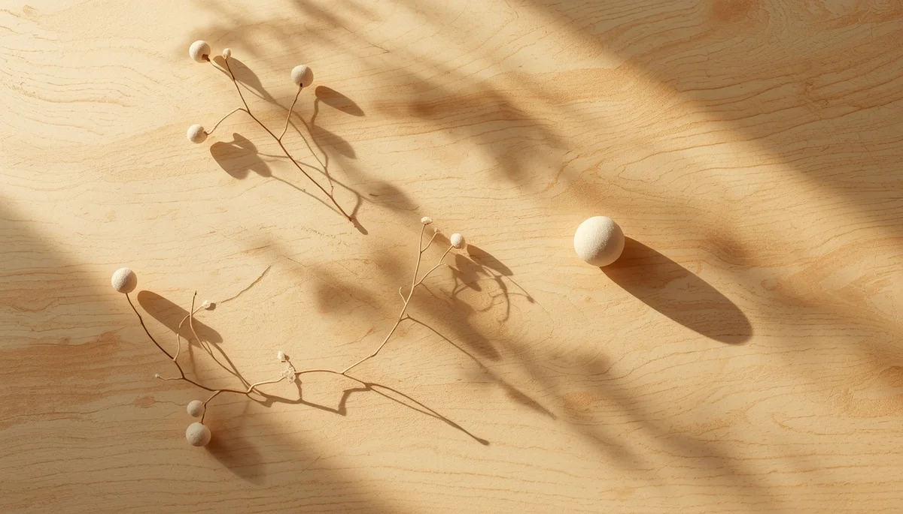

La maduración biológica
Para comprender por qué algunos niños tardan más tiempo en conseguir noches secas, es necesario mirar hacia la fisiología y el desarrollo del sistema nervioso. El control de esfínteres durante el sueño no depende exclusivamente de la voluntad, sino de una compleja interacción entre la capacidad de la vejiga, la producción hormonal nocturna y la profundidad del sueño.
El papel de la hormona antidiurética y el sueño
Durante la noche, el organismo segrega de forma natural una hormona llamada vasopresina, encargada de disminuir la producción de orina mientras dormimos. En muchos niños, este ritmo de secreción madura de manera más pausada. Además, un sueño muy profundo puede impedir que las señales enviadas por la vejiga llena despierten al cerebro a tiempo.
"El cuerpo infantil no es un reloj mecánico que se pueda programar por la fuerza; es un organismo en pleno crecimiento que merece respeto en sus tiempos biológicos."
Un engranaje que evoluciona a su propio ritmo
Cada niño cuenta con un calendario interno único. Forzar este proceso antes de que el sistema nervioso y hormonal esté plenamente preparado solo genera frustración mutua. Con paciencia y una adecuada comprensión médica, el equilibrio acaba llegando de forma natural.
La conexión entre el cerebro y la vejiga
El sistema de avisos nocturnos requiere que las vías de comunicación nerviosa alcancen un grado óptimo de madurez. Conforme el crecimiento avanza, estas conexiones se fortalecen de manera silenciosa hasta consolidar el autocontrol durante toda la noche.
➔ Volver al índice de enuresis nocturna